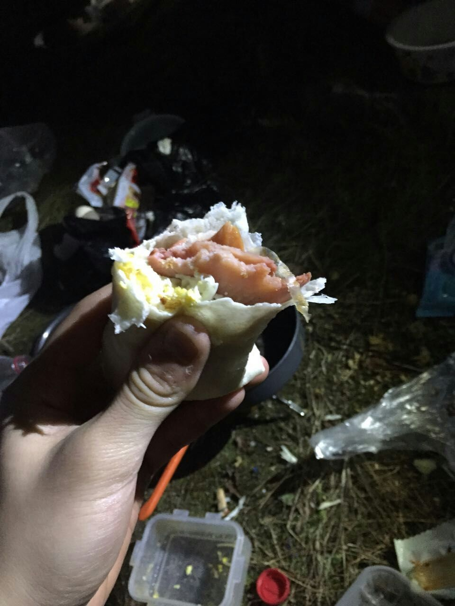
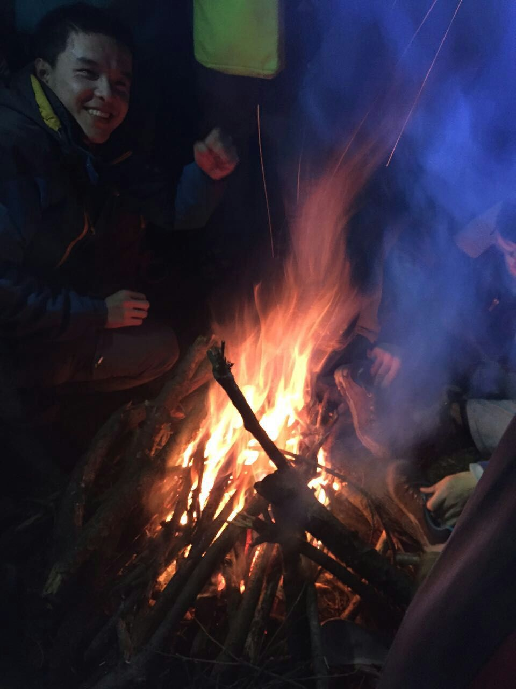

发信人: Princeq (Princeq), 信区: outdoor
标 题: 挫挫的大明山游记。。
发信站: 饮水思源 (2015年12月14日17:49:22 星期一)
第一次听说大明山这条线是在翻去年BBS上的召集帖的时候，听到最多的就是去年山上的流
星雨。可惜这次走线的水神太多了…连星星都没见到一个…用大厨兼法师桑的话来说，就
是野外美食协会闲的无聊去背锅吃了顿饭，连点风景都没有…其实周六下午出了一点太阳
的时候还是不错的，周天的小溪也很好。
（zzm的脑袋尖亮了）

其实我是第一次走干事线，这条线确实也不负盛名。果然干事线就会更欢乐呢，有装萌新
的老棒子，也有基情四射的小鲜肉。。但是不一样的是大家都特别团结（出自鱼子同学的
满分作文），走得多了许多正能量，笑。。领队组和队里的老人们特别负责的，感谢他们
。
（车上发现毛毛的吻技不如金花君熟练）
screen.width - 200){this.width = screen.width - 200}">
本来准备洗完衣服再写的，但是当我发现我丢了一只袜子的时候…我实在无法正视那堆衣
服了…尤其是想到那只袜子现在无论在哪都很奇怪。。好了宝宝要写流水账了。
谢谢组里人一路的帮助^_^组长超级负责，估计给我拿了全协会最大的睡袋吧，反正我当天
在屋里没有见到更大号的…拒绝我叫他哲学家的学长总是有着老僧入定的眼神，与语气形
成了奇怪的反差萌…还有拄着法杖的法师桑应该会在高冷的途中越走越远吧…所以我真的
很遗憾我把组长立的flag一个一个都实现了，啊呀。
（出发前一群人拿着头巾围巾和帽子玩的时候我就发现这个组有毒）
screen.width - 200){this.width = screen.width - 200}">
周六上午真是令人难忘的回忆啊。容许我用一个高冷的表情，嗯。一开始不论是溯溪湿鞋
，还是作为唯一的一个四人组勾搭领队压队都是正常的剧情，还遇到好多大队伍…在领队
的第二个“v1抱石”处（其实就是抓树树树吧）扑了一次街…组长真的立太多flag了，我
一个一个实现起来好累啊。。。太要命了。
screen.width - 200){this.width = screen.width - 200}">
周六下午的寂静岭给人各种印象深刻…呃，太阳出来还是满开心的，还找到了正确的路牌
（暗搓搓的庆幸他们没有继续走探路路线）。晚上吃的也很实在，还有篝火烤鞋和谜之运
气…晚上回帐篷特别佩服这次的队医妹子，语气温柔但是内心很强大的样子，给小怪兽换
药时特别认真仔细。这届医学院大一去冬训的好多，顿时感觉很开心，笑。人多好啊，卢
湾分舵未来的希望啊，来陪我吧嘻嘻嘻…
（愉快的卷饼）
 screen.width - 200){this.width = screen.width - 200}">
周天早上确实走的666，总觉得雨还满大的。两个需要布绳的难点都真是太赞了，不过现在
想起来也是恍如隔世…说好的下降也没有了…等待途中认真写作业的鱼子同学最后作业也
泡汤了哈哈哈…第一次和小怪兽出线，他一直在我前面捡垃圾，很感动，希望以后能力所
及的时候也能这么做。还有和zzm和王妈妈说的一样，要对自然怀有敬畏吧。
还有最重要的一点就是我周六早上走搓了走搓了走搓了…唉，虽然可能只有压队看到…但
还是非常不开心…第五次出线的组长背了帐篷，谢大然成了副领队，而我在犯调不好背负
这种错误…在后面和压队悠着真是说不过去…还好没有出更多问题。。
（压队明媚而温暖的笑容）
 screen.width - 200){this.width = screen.width - 200}">
第一次体验到传说中走搓的感觉…上午最后半个小时不太喘得过气来…其实现在想来也就
是很累而已。。可能就是心里崩溃了，一直想停一停的样子。真是太不负责了吧。还是主
要因为太久放松锻炼了，或者是熬夜过多？这个包有点奇怪，它要么就是腰扣勒在胯上，
要么就是被调的太小了重量全在背上，并不知道为什么。
超脱的学长和压队一直在后面跟着，还有组长在前面，法师桑紧随队伍探路，好暖的。本
来组长就没给我分什么吃的…结果他们中午把气罐也拿走了真是6666…并不想让自己成为
别人的负担吧，作为组里面的一员，作为也算是出去过几次的半生不熟的老腊肉一块…总
是要做到什么，但是很遗憾还是让大家分担了许多，还是怂到并不能帮到什么忙。所以还
是要加油啊，不论是学习还是出线…又要迎来熬夜的一周pre，TBL，六级和临时上阵的技
挑赛了~还有多背了两瓶水上去，第二天原样背下来了真是乏开心。
那这学期的最后一条线就是这样啦，满满的都是很开心的回忆~嗯，也许我和水比较有缘，
每次不是雨就是溪，这次两者都有了~还有水群~沿途的风景很棒，但一起走的人是更美好
的风景~下次继续一起走吧。
screen.width - 200){this.width = screen.width - 200}">
PS:山浩同款，dry.Q的冲锋衣肩膀湿了，Gore-tex一点事都没有，果然一分钱一分货哦~不
过土豪妹子第一次出线，直接把这么好的衣服戳了个洞，给她心疼啊…
PPS:老蚊子说冲锋衣肩膀湿也可能是水气出不去打湿的，其实我觉得也可能是水从脖子里
灌进去了。。副领队说，要相信自己的装备，嗯…如果我穿着鸟和lowa，拿着bd那当然66
6咯~但是并不可能做到，笑。。其实还是自己的体能和技巧更重要吧。。我觉得。。嗯，
要是滑板鞋的话除了真的鞋不好之外更大的还是腿部力量的问题吧，是吗？。。嗯，走搓
不是装备的错。。
--
行诸山野，立命天地——啦啦啦
※ 来源:·饮水思源 bbs.sjtu.edu.cn·[FROM: 10.200.52.241]
|